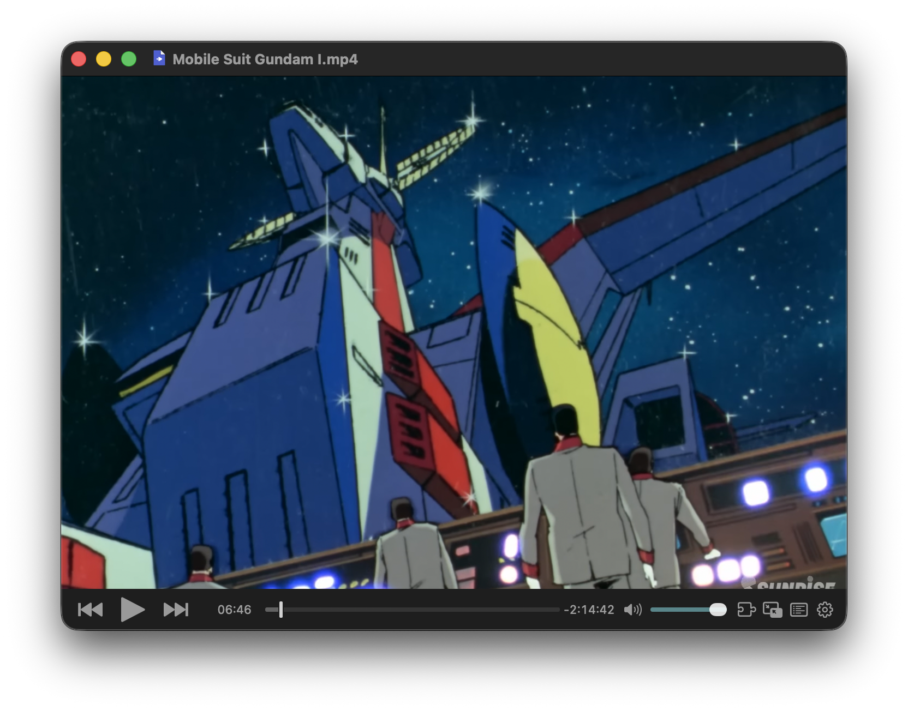
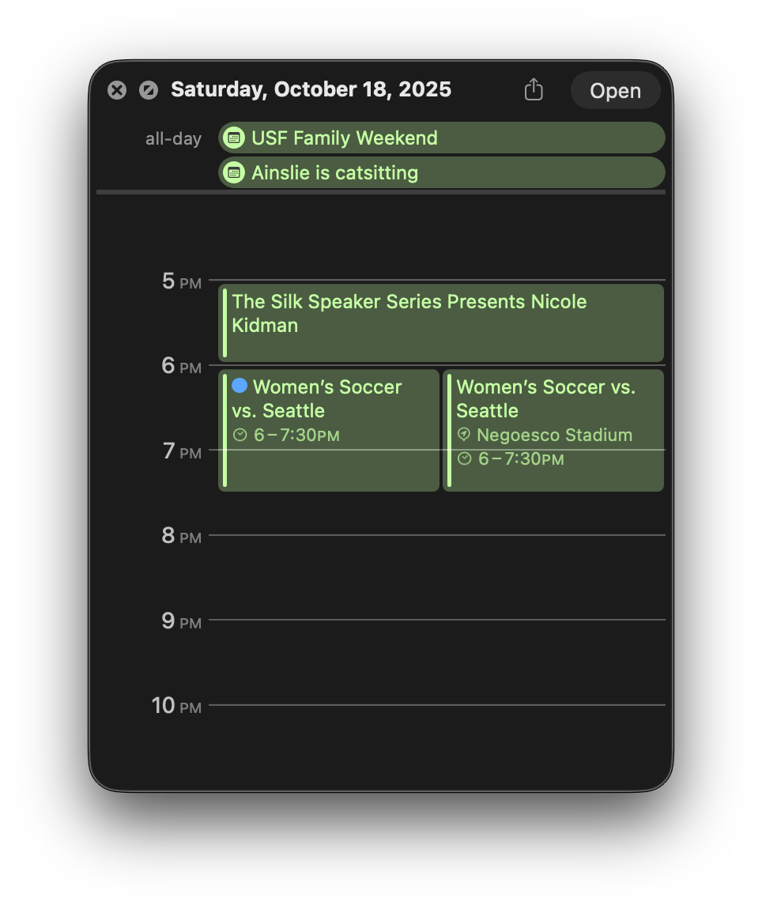

Leaf’s Favorite Mac Utilities
As a Mac user, I've come to rely on a set of powerful, elegant, and sometimes obscure utilities that make my daily workflows better. Here are a few of my absolute favorites.

Homerow
A keyboard-centric navigation tool.

IINA
The modern media player for macOS.

Quick Look
An underrated gem for previewing files.